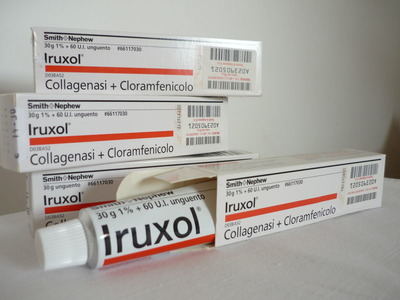

Контактна інформація:
Ціна: 630 грн/уп.
В наявності
Виробник: Італія
Ціна: 630 грн/уп.
В наявності
Саме в FarmItal ви можете купити іруксол,iruxol,ируксол в Україні, Гарантовано Якісний!
Доставка Iruxol здійснюється транспортними компаніями, терміни виконання замовлення обумовлюються менеджером Фармітал. Ви можете замовити Іруксол,Ируксол у містах: Одеса, Херсон, Чернігів, Сєверодонецьк, Бердянськ, Бровари, Дніпро, Вінниця, Київ, Слов'янськ, Полтава, Краматорськ, Біла Церква, Кам'янське, Маріуполь, Чернівці, Олександрія, Кам'янець-Подільський, Львів, Запоріжжя, Кропивницький, Житомир, Івано-Франківськ, Суми, Черкаси, Костянтинівка, Мелітополь, Кривий Ріг, Рівне, Луцьк, Нікополь, Павлоград, Ужгород, Кременчук, Лисичанськ, Хмельницький, Тернопіль, Харків, Миколаїв, а також в інших населених пунктах України.
Мазь.
Фармакодинаміка.Iруксол належить до групи протимікробних засобів для місцевого лікування уражень шкіри і ран шляхом ферментативного очищення від некротичних мас ігнійних нальотів. Поєднання активних ферментів і антибіотика широкого спектра дії хлорамфеніколу дає можливість очищення ран від некротичних мас і запобігає розповсюдженню інфекції, підтримуючи у такий спосіб природний процес загоювання.Iруксол мазь містить суміш ферментів, отримуваних шляхом ферментації зClostridium histolyticum, чинним складником якої є клостридіопептидаза А (колаген аза). Слід підкреслити, що мазьова основа ліпофільна і не містить води.
За допомогою мазі Iруксол досягається ферментативне очищення ран без механічного подразнення, супровідних болей і кровотеч. Невеликі струпи і некротична тканина при цьому розплавляються, а великі – пом’якшуються, завдяки чому їх легко видалити.Iруксол сприяє грануляції і не перешкоджає процесам епітелізації. Препарат не чинить шкідливого впливу на неушкоджений епітелій, грануляційну тканину, жирову тканину і мускулатуру, тобто мазь не ушкоджує здорову тканину.
Підвищена чутливість до хлорамфеніколу, колаген азиабо до інших компонентів препарату; захворювання органів кровотворення, тяжкі ураження нирок і печінки, псоріаз, екзема, грибкові захворювання шкіри; вагітність і лактація; діти до 12 років.
На початку лікування в ділянці рани можуть спостерігатися місцеві подразнення шкіри (жар, біль), які самостійно минають, тому лікування препаратом не слід припиняти.
У поодиноких випадках зустрічаються реакції місцевої підвищеної чутливості до хлорамфеніколу, напр. контактний алергічний дерматит (почервоніння, набряк, свербіж) або екзантема, що швидко минають після припинення лікування.При місцевому застосуванні хлорамфеніколу, внаслідок його можливого всмоктування, дуже рідко спостерігаються системні реакції – а пластична анемія (лейкопенія, тромбоцит опенія, агранулоцит оз). Незважаючи на те, що при застосуванні Iруксолусистемних реакцій не відмічалося, тривало (більше, ніж призначив лікар) застосовувати препарат не рекомендується.
Під час лікуванняIруксолом належить уникати застосування інших місцевих засобів (крім фізіологічного розчину натрію хлориду), тому що важкі метали, антисептичні засоби, мила, спирт та інші подібні засоби можуть ін активувати протеолітичні ферменти.
Зберігати у недоступному для дітей місці при кімнатній температурі (15- 25°С).